Home > Design Projects >
Methods Used:
Surveys
Expert Interviews
Design Sprint
Wireframes
Expert Testing
SUS Evaluation
Tools Used:
Figma
HTML/CSS
JS, Node
PowerPoint
Design Process: 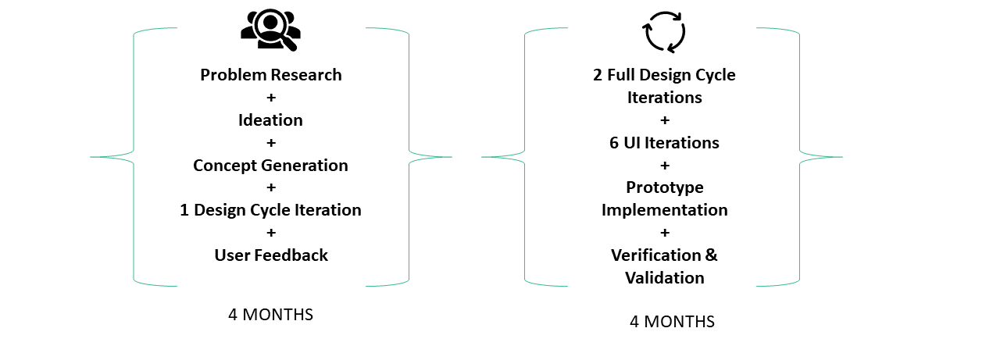
A functional medium-fidelity prototype capable of recommending resources from a manually created database of ~100 real mental health resources
An E2E system design accomodating intake,user preference input, resource recommendation, and progress tracking illustrated by a Figma prototype with 25+ screens
Positive and constructive feedback from expert counsellors and post-secondary students to inform future designs
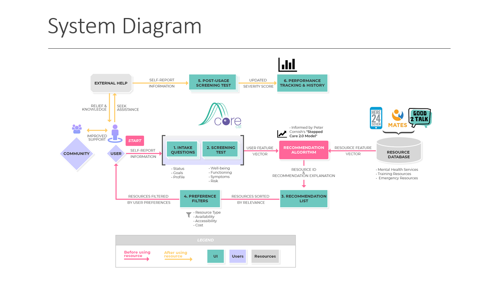 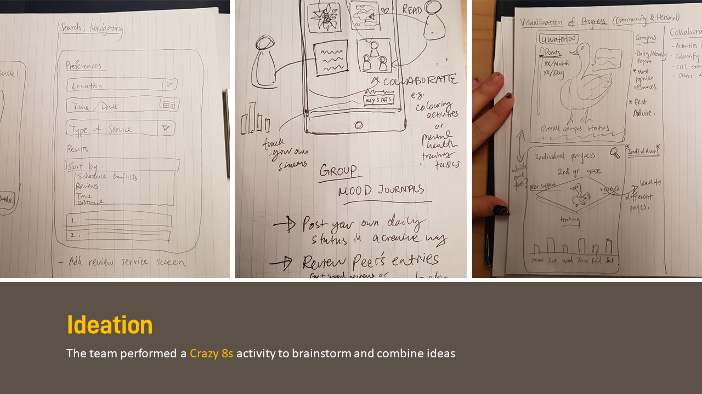 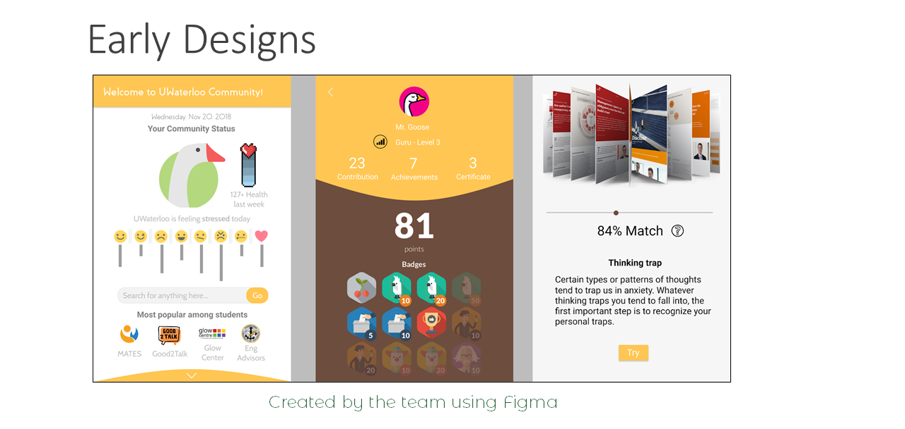 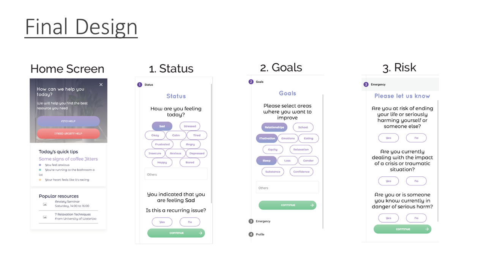 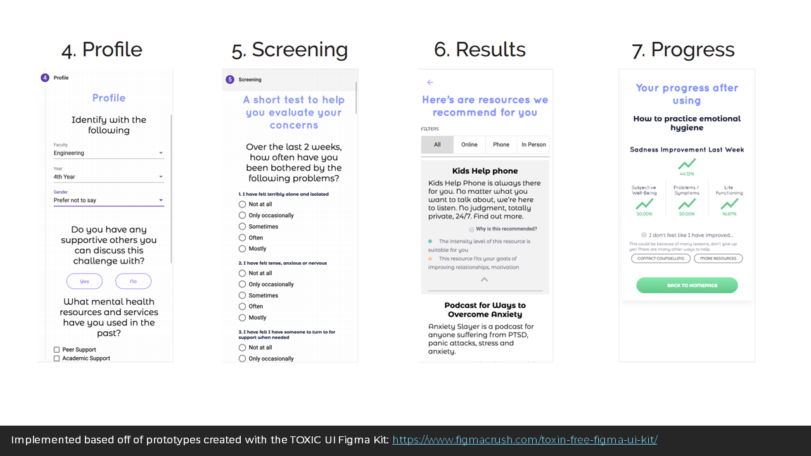
Symposium Poster Full Project Summary
Project Overview
Dates: September - April 2019
Description: Beacon Health was a Systems Design Engineering capstone project to design a recommender system to be implemented on post-secondary school websites and used by students to improve access to mental health resources by recommending the most appropriate service available and measuring improvement with validated scales.
Two of the team members, Oscar Lo and Lily Ren, moved forward with the project as an entrepreneur idea after their pitch of the project successfully received one of two awards from the 2019 Palihapitiya Venture Creation Fund.
Team Members: 4 senior Systems Design Engineering Students from the University of Waterloo supervised by Professor Igor Ivkovic
My Contributions: I participated in all stages of the iterative design cycle, created wireframes to show to users and counsellors, and designed and facilitated user testing activities
Description: Beacon Health was a Systems Design Engineering capstone project to design a recommender system to be implemented on post-secondary school websites and used by students to improve access to mental health resources by recommending the most appropriate service available and measuring improvement with validated scales.
Two of the team members, Oscar Lo and Lily Ren, moved forward with the project as an entrepreneur idea after their pitch of the project successfully received one of two awards from the 2019 Palihapitiya Venture Creation Fund.
Team Members: 4 senior Systems Design Engineering Students from the University of Waterloo supervised by Professor Igor Ivkovic
My Contributions: I participated in all stages of the iterative design cycle, created wireframes to show to users and counsellors, and designed and facilitated user testing activities
Methods Used:
Tools Used:
Design Process: 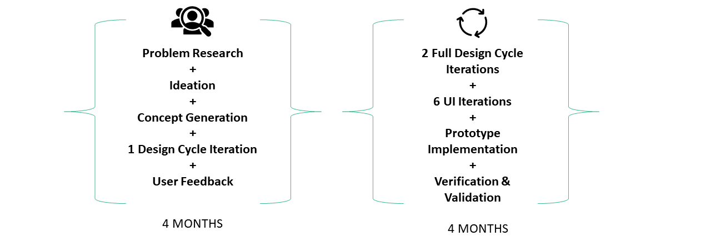
Major Outcomes
Work Samples
e.g. System Diagram, Wireframes, Early Designs, Final Design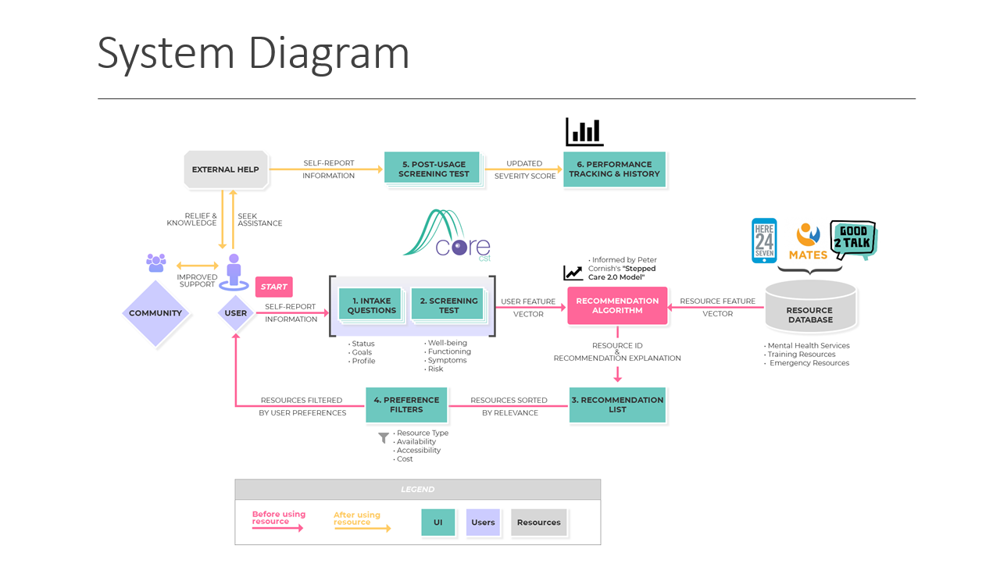 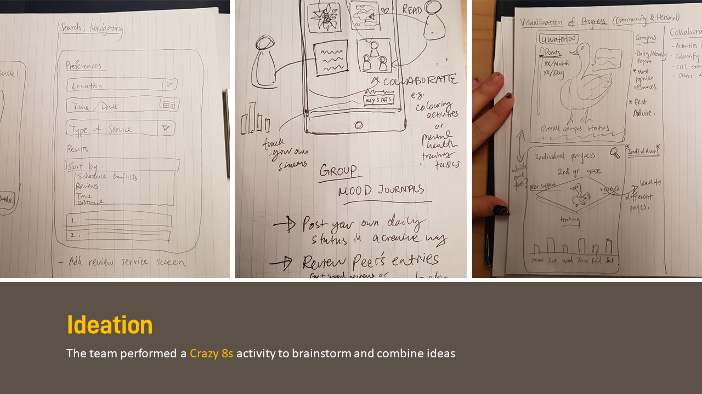 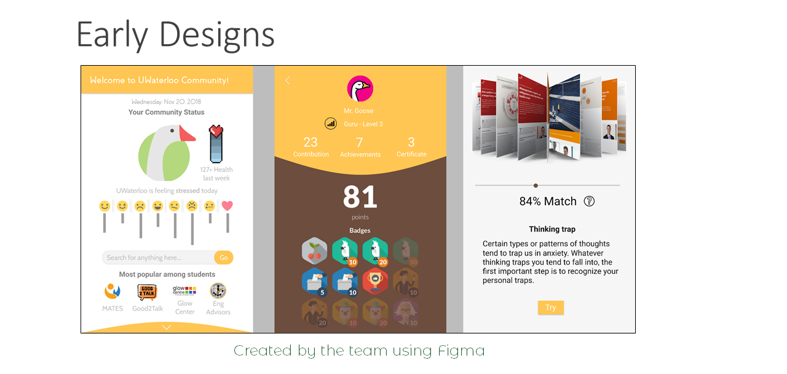 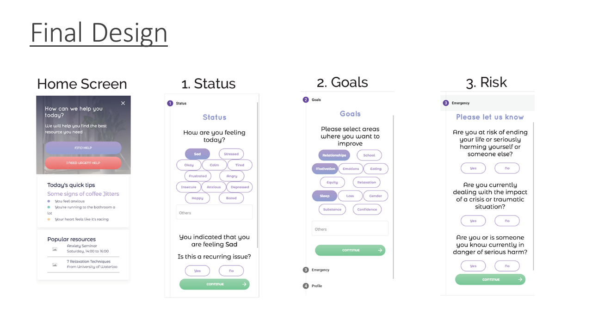 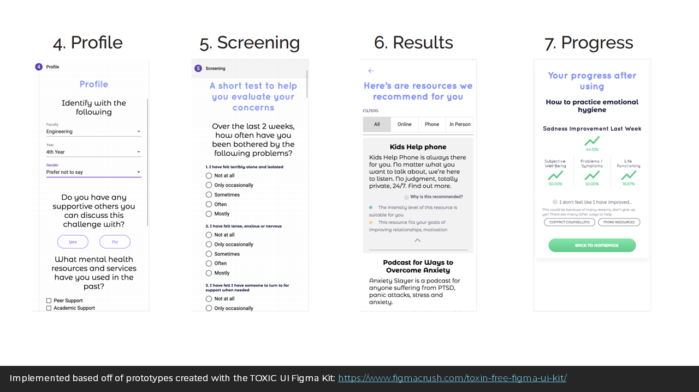
{kind=link}
{kind=link}
{kind=link}
{kind=link}
{kind=link}
Symposium Poster Full Project Summary